まずは 診断の流れを見る
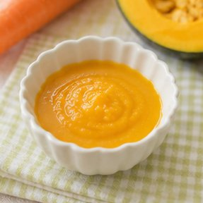
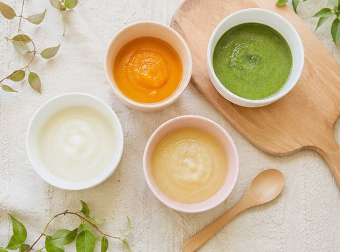
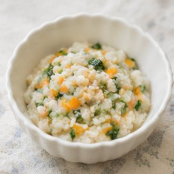
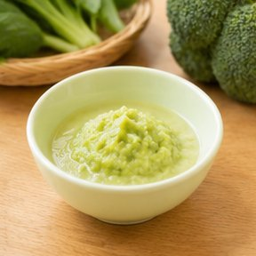
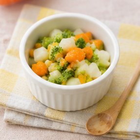
STAGE GUIDE
ゴックン期から卒業まで、赤ちゃんの成長に合わせた食材・固さ・量を提案
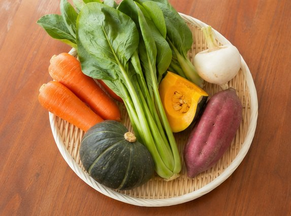
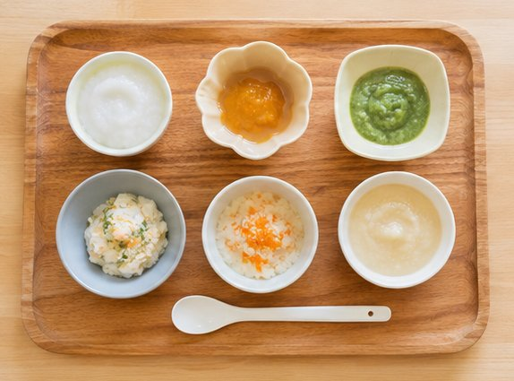
SERVICE FEATURES
赤ちゃんのペースに合わせた食材提案で、毎日の離乳食をもっと楽しく
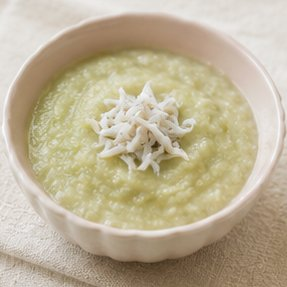
5〜6ヶ月のゴックン期から12〜18ヶ月のパクパク期まで、月齢に合わせた食材・固さ・量を的確に提案します。
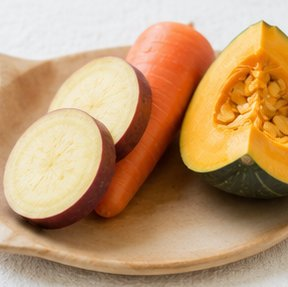
卵・乳・小麦など主要アレルギー食材を自動除外。リスク食材への注意事項もわかりやすく表示します。
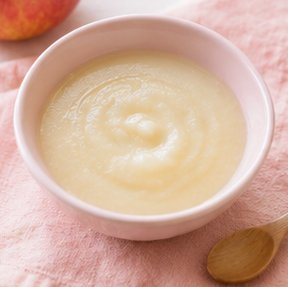
月齢別必要栄養素の達成度をグラフ表示。鉄分・カルシウム・たんぱく質など不足しがちな栄養を可視化します。
週末まとめ作り・冷凍ストック術・市販品活用など、忙しいパパ・ママの実態に合わせた時短アドバイスを提供します。
WHY CHOOSE US
おすすめ食材宅配サービス連携
COMPARISON
Baby Food Advisor だけが提供できる、赤ちゃん専用診断
| 機能・特徴 | Baby Food Advisor |
一般的な 育児アプリ |
ネット検索 |
|---|---|---|---|
| 月齢別おすすめ食材の自動提案 | ✅ | △ | ❌ |
| アレルギー食材の自動除外 | ✅ | △ | ❌ |
| 栄養バランスのグラフ可視化 | ✅ | ❌ | ❌ |
| 時短レシピのパーソナル提案 | ✅ | △ | △ |
| 登録不要・完全無料 | ✅ | ❌ | ✅ |
| 小児科医監修コンテンツ | ✅ | △ | ❌ |
△ = 一部対応 / ❌ = 非対応
HOW IT WORKS
わずか6つの質問に答えるだけで、あなたの赤ちゃんに最適な離乳食を提案
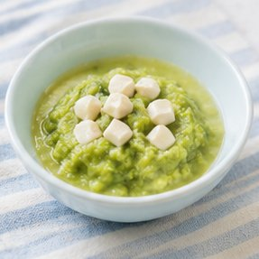
赤ちゃんの月齢（5〜18ヶ月）と食物アレルギーの有無を選択します。調理の手間・食べ具合なども入力。
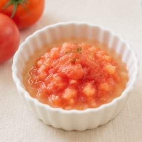
入力した条件をもとに月齢別食材リスト・アレルギー対応・栄養バランスを自動分析します。
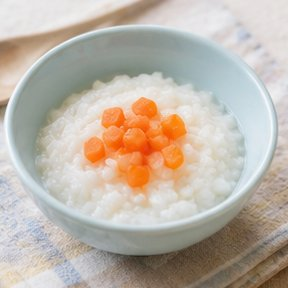
おすすめ食材リスト・簡単レシピ・栄養バランスグラフ・時短アドバイスが一覧表示されます。
RESULT PREVIEW
診断後はこのような結果が表示されます
COMMON WORRIES
Baby Food Advisor がすべての悩みに答えます
USER REVIEWS
12,000件以上の診断から寄せられた声の一部をご紹介
月齢に合った食材がすぐ分かって助かりました。アレルギーがあってどれを食べさせていいか迷っていたのですが、安全食材リストで安心して進められました。特に卵アレルギーの除外機能が本当に便利！
栄養バランスのグラフが見やすくて、何が不足しているか一目で分かります。レシピヒントも実践的で、時短まとめ作りが習慣になりました。毎週末の冷凍ストックが楽しくなりました。
登録不要ですぐ使えるのが良かったです。後期に入って何を食べさせていいか悩んでいたのですが、ステージ別の食材リストが充実していて参考になりました。
FAQ
月齢・アレルギー・好みから最適な食材とレシピを無料提案
無料で診断する →登録不要 · 完全無料 · ブラウザ内処理（個人情報送信なし）
累計診断数 12,418件以上 · 第30日目のサービス